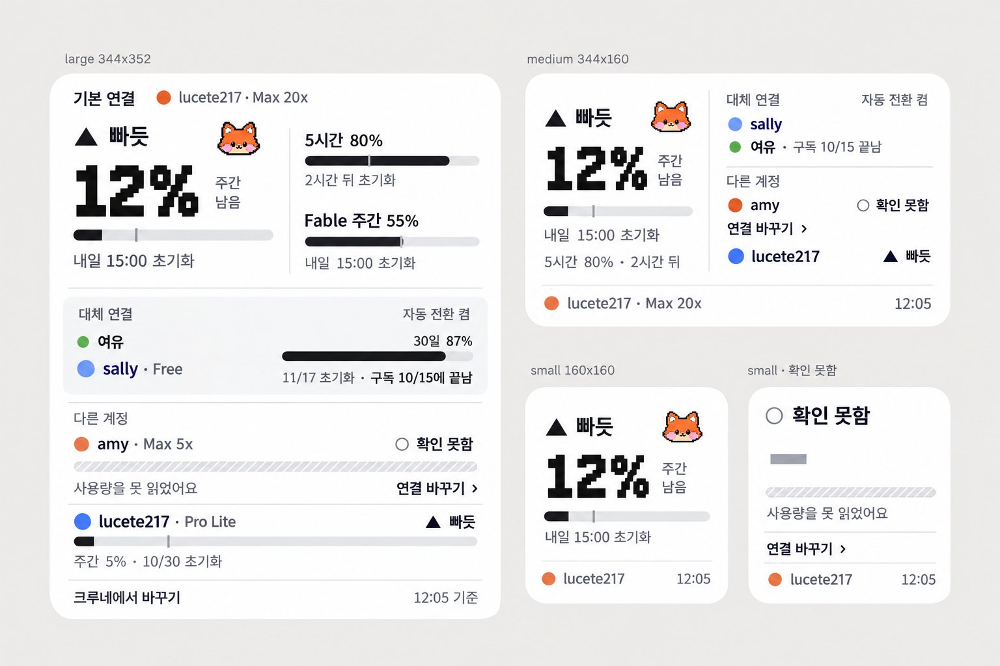
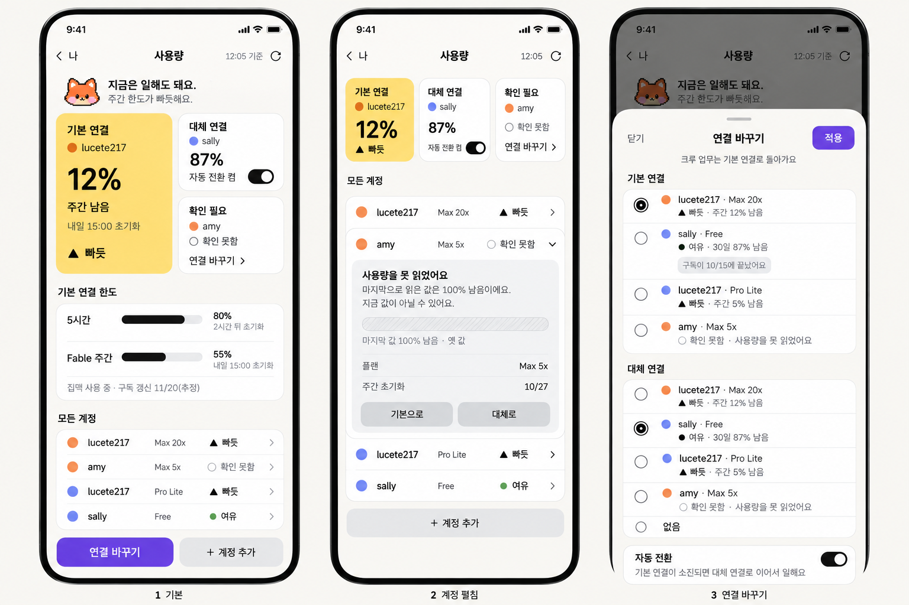
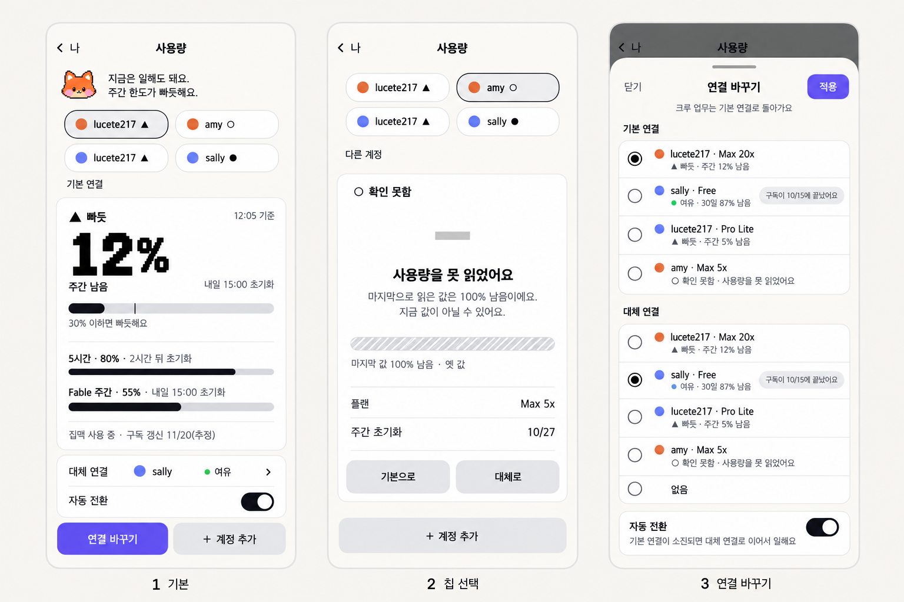

사용량 위젯·화면 시안 4차
10월 23일 12시 실제 수치입니다. 엔진은 캐릭터 없이 색이 다른 동그라미로만 구분했고, 애플 최신 공식 가이드와 UI-Craft 규칙을 적용했고, 크루네 화면은 크루네 보고 탭의 타일과 칩 문법으로 다시 설계했습니다.
엔진 구분은 색 동그라미 두 개
Claude는 주황 Codex는 연보라 파랑. 막대는 모두 중립 잉크색이라 엔진 색과 상태 표시가 섞이지 않습니다. 상태는 작은 모양과 글자입니다.
위젯구조 확정안
작은 위젯은 판정과 가장 급한 한도 하나, 중간은 거기에 대체 연결과 다른 계정, 큰 것은 한도 상세를 더합니다. 값을 못 읽은 줄에는 「연결 바꾸기 ›」 링크가 붙습니다. 루프 얼굴 한 점과 큰 숫자의 픽셀 글꼴이 크루 느낌의 전부입니다. 막대의 짧은 눈금은 30% 선입니다.

크루네 사용량 화면 A. 타일추천
보고 탭과 같은 타일 문법입니다. 노란 큰 타일이 기본 연결, 흰 타일 둘이 대체 연결과 확인이 필요한 계정입니다. 아래는 상세 한도와 모든 계정이 각각 한 덩어리 목록입니다. 카드를 쌓지 않고 강약을 면의 크기와 색으로 만들었습니다.

크루네 사용량 화면 B. 칩
크루 칩처럼 계정 네 개를 칩으로 올리고, 고른 계정 하나만 큰 카드로 보여 줍니다. 더 조용하고 요소가 적습니다. 대신 대체 연결과 다른 계정은 칩을 눌러야 보입니다.

적용한 규칙
| 출처 | 규칙 | 적용 |
|---|---|---|
| 애플 위젯 | 여백 16pt, 글자 11pt 이상, 갱신 시각 표기, 작은 위젯은 정보 하나 | 모든 크기에 12:05 표기, 작은 위젯은 판정과 숫자 하나 |
| 애플 색·접근성 | 색만으로 상태를 전달하지 않음, 대비 4.5 대 1 | ▲ ● ○ 모양과 글자, 엔진은 동그라미 |
| 애플 게이지 | 왼쪽에서 오른쪽으로 값까지 채움, 두께 얇게 | 얇은 캡슐 막대와 30% 눈금 |
| 애플 버튼·시트 | 강조 버튼은 화면당 하나, 시트는 왼쪽 닫기와 오른쪽 완료, 손잡이 | 보라 단추 하나, 시트 머리에 「닫기」와 「적용」 |
| 애플 재질 | Liquid Glass는 조작과 내비게이션 층에만 | 카드·목록·위젯 내용에는 쓰지 않음 |
| UI-Craft | 카드 쌓기 금지, 강조색 하나, 큰 숫자는 꾸미지 않음 | 타일과 한 덩어리 목록, 보라는 결정 단추에만 |
| 크루네 규격 v1 | 회색 보조 단추, 잉크 선택 표시, 하위 화면은 뒤로와 제목 | 그대로 반영 |
확인하지 못한 것
- 애플 OS 27 계열에서 확인된 변화는 Liquid Glass 재조정과 macOS 27의 버튼 테두리 표시 설정입니다. 위젯 규칙 자체의 27 전용 변경은 확인되지 않았습니다.
- 맥 데스크톱 위젯의 정확한 크기와, 맥에서 색을 뺀 틴트 모드가 실제로 적용되는지는 애플 문서끼리 달라 실제 위젯으로 확인해야 합니다.
- 시안의 기본 연결 lucete217 Claude, 대체 연결 sally Codex, 자동 전환 켬은 가정입니다. 이 값은 크루네 설정에 있고 위젯으로 넘어오는 경로를 먼저 확인해야 합니다.